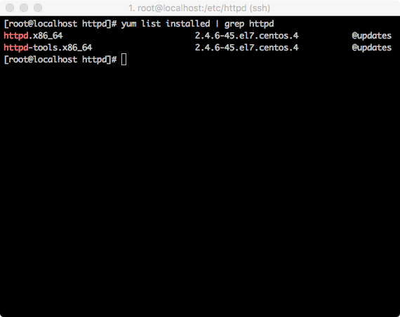
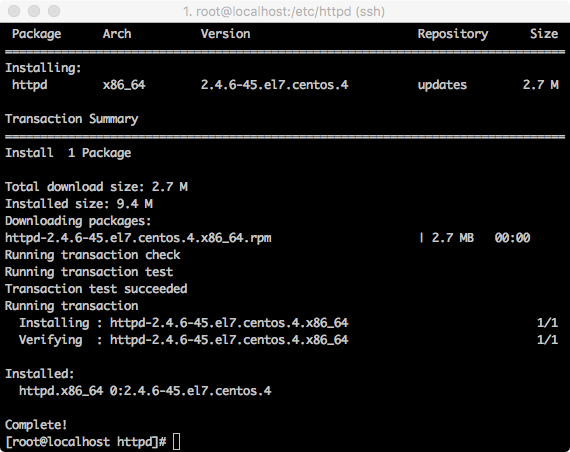
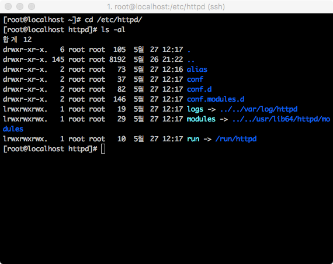
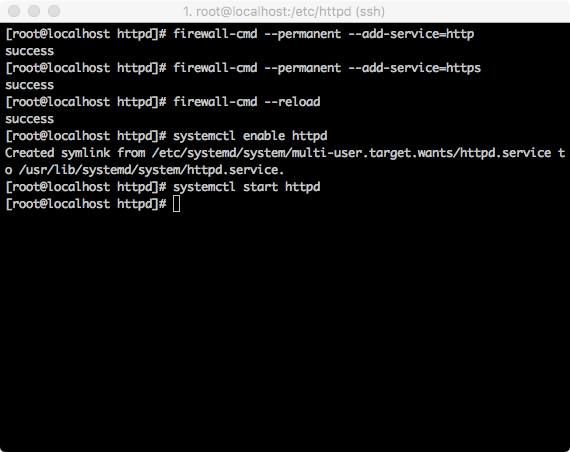
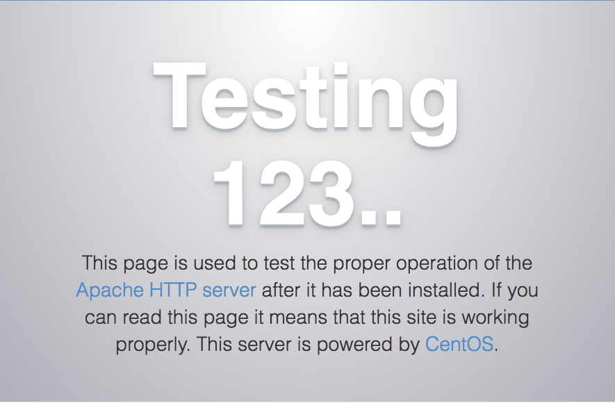
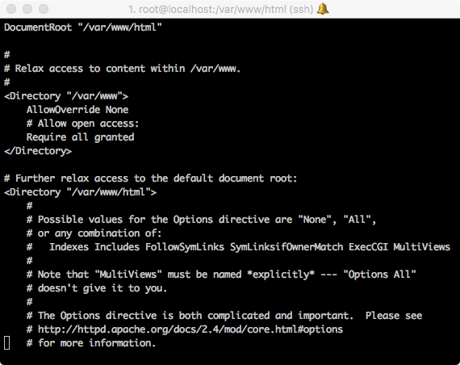

<!DOCTYPE html>
<html>
<head><meta name="generator" content="Hexo 3.8.0">
    <meta charset="utf-8">
    
    <title>Cent OS Apache 웹서버 설치 | J Dev</title>
    <meta name="viewport" content="width=device-width, initial-scale=1, maximum-scale=1">
    
        <meta name="keywords" content="linux,centos">
    
    <meta name="description" content="Apache 설치 설치 옵션에 따라 Apache Web Server 설치가 이미 되어 있을 수 있습니다. 설치가 되어있다면 아래 처럼 확인 할 수 있습니다.    설치가 되어 있지 않은 경우는 아래의 명령어로 설치를 진행합니다.  1$ yum install -y httpd  Apache 같은 중요 인프라를 직접 소스를 컴파일해서 사용하는 방법도 있으나 직접">
<meta name="keywords" content="linux,centos">
<meta property="og:type" content="article">
<meta property="og:title" content="Cent OS Apache 웹서버 설치">
<meta property="og:url" content="http://woonyzzang.github.com/2019/09/17/cent-os-apache-install/index.html">
<meta property="og:site_name" content="J Dev">
<meta property="og:description" content="Apache 설치 설치 옵션에 따라 Apache Web Server 설치가 이미 되어 있을 수 있습니다. 설치가 되어있다면 아래 처럼 확인 할 수 있습니다.    설치가 되어 있지 않은 경우는 아래의 명령어로 설치를 진행합니다.  1$ yum install -y httpd  Apache 같은 중요 인프라를 직접 소스를 컴파일해서 사용하는 방법도 있으나 직접">
<meta property="og:locale" content="en">
<meta property="og:image" content="http://woonyzzang.github.com/2019/09/17/cent-os-apache-install/cent-os-apache-install_1.png">
<meta property="og:updated_time" content="2019-09-16T16:25:36.455Z">
<meta name="twitter:card" content="summary">
<meta name="twitter:title" content="Cent OS Apache 웹서버 설치">
<meta name="twitter:description" content="Apache 설치 설치 옵션에 따라 Apache Web Server 설치가 이미 되어 있을 수 있습니다. 설치가 되어있다면 아래 처럼 확인 할 수 있습니다.    설치가 되어 있지 않은 경우는 아래의 명령어로 설치를 진행합니다.  1$ yum install -y httpd  Apache 같은 중요 인프라를 직접 소스를 컴파일해서 사용하는 방법도 있으나 직접">
<meta name="twitter:image" content="http://woonyzzang.github.com/2019/09/17/cent-os-apache-install/cent-os-apache-install_1.png">
    
    <link rel="canonical" href="http://woonyzzang.github.com/2019/09/17/cent-os-apache-install/">

    

    
        <link rel="icon" href="/images/favicon.png">
    

    <link rel="stylesheet" href="/libs/font-awesome/css/font-awesome.min.css">
    <link rel="stylesheet" href="/libs/titillium-web/styles.css">
    <link rel="stylesheet" href="/libs/source-code-pro/styles.css">

    <link rel="stylesheet" href="/css/style.css">

    <script src="/libs/jquery/2.0.3/jquery.min.js"></script>
    
    
        <link rel="stylesheet" href="/libs/lightgallery/css/lightgallery.min.css">
    
    
    

</head>
</html>
<body>
    <div id="wrap">
        <header id="header">
    <div id="header-outer" class="outer">
        <div class="container">
            <div class="container-inner">
                <div id="header-title">
                    <h1 class="logo-wrap">
                        <a href="/" class="logo"></a>
                    </h1>
                    
                        <h2 class="subtitle-wrap">
                            <p class="subtitle">Web Development Story Blog</p>
                        </h2>
                    
                </div>
                <div id="header-inner" class="nav-container">
                    <a id="main-nav-toggle" class="nav-icon fa fa-bars"></a>
                    <div class="nav-container-inner">
                        <ul id="main-nav">
                            
                                <li class="main-nav-list-item">
                                    <a class="main-nav-list-link" href="/">Home</a>
                                </li>
                            
                                        <ul class="main-nav-list"><li class="main-nav-list-item"><a class="main-nav-list-link" href="/categories/App/">App</a><ul class="main-nav-list-child"><li class="main-nav-list-item"><a class="main-nav-list-link" href="/categories/App/Ionic/">Ionic</a></li></ul></li><li class="main-nav-list-item"><a class="main-nav-list-link" href="/categories/Editor/">Editor</a><ul class="main-nav-list-child"><li class="main-nav-list-item"><a class="main-nav-list-link" href="/categories/Editor/SublimeText/">SublimeText</a></li><li class="main-nav-list-item"><a class="main-nav-list-link" href="/categories/Editor/Visualstudio/">Visualstudio</a></li><li class="main-nav-list-item"><a class="main-nav-list-link" href="/categories/Editor/Webstorm/">Webstorm</a></li></ul></li><li class="main-nav-list-item"><a class="main-nav-list-link" href="/categories/Etc/">Etc</a><ul class="main-nav-list-child"><li class="main-nav-list-item"><a class="main-nav-list-link" href="/categories/Etc/Log/">Log</a></li></ul></li><li class="main-nav-list-item"><a class="main-nav-list-link" href="/categories/FrontEnd/">FrontEnd</a><ul class="main-nav-list-child"><li class="main-nav-list-item"><a class="main-nav-list-link" href="/categories/FrontEnd/Angular-js/">Angular.js</a></li><li class="main-nav-list-item"><a class="main-nav-list-link" href="/categories/FrontEnd/Backbone-js/">Backbone.js</a></li><li class="main-nav-list-item"><a class="main-nav-list-link" href="/categories/FrontEnd/D3-js/">D3.js</a></li><li class="main-nav-list-item"><a class="main-nav-list-link" href="/categories/FrontEnd/Javascript-js/">Javascript.js</a></li><li class="main-nav-list-item"><a class="main-nav-list-link" href="/categories/FrontEnd/Node-js/">Node.js</a></li><li class="main-nav-list-item"><a class="main-nav-list-link" href="/categories/FrontEnd/React-js/">React.js</a></li><li class="main-nav-list-item"><a class="main-nav-list-link" href="/categories/FrontEnd/Require-js/">Require.js</a></li><li class="main-nav-list-item"><a class="main-nav-list-link" href="/categories/FrontEnd/Webpack/">Webpack</a></li><li class="main-nav-list-item"><a class="main-nav-list-link" href="/categories/FrontEnd/jQuery/">jQuery</a></li></ul></li><li class="main-nav-list-item"><a class="main-nav-list-link" href="/categories/OS/">OS</a><ul class="main-nav-list-child"><li class="main-nav-list-item"><a class="main-nav-list-link" href="/categories/OS/CentOS/">CentOS</a></li><li class="main-nav-list-item"><a class="main-nav-list-link" href="/categories/OS/Mac/">Mac</a></li><li class="main-nav-list-item"><a class="main-nav-list-link" href="/categories/OS/Ubuntu/">Ubuntu</a></li><li class="main-nav-list-item"><a class="main-nav-list-link" href="/categories/OS/Windows/">Windows</a></li></ul></li><li class="main-nav-list-item"><a class="main-nav-list-link" href="/categories/Server/">Server</a><ul class="main-nav-list-child"><li class="main-nav-list-item"><a class="main-nav-list-link" href="/categories/Server/ASP/">ASP</a></li><li class="main-nav-list-item"><a class="main-nav-list-link" href="/categories/Server/AWS/">AWS</a></li><li class="main-nav-list-item"><a class="main-nav-list-link" href="/categories/Server/Docker/">Docker</a></li><li class="main-nav-list-item"><a class="main-nav-list-link" href="/categories/Server/Gitlab/">Gitlab</a></li><li class="main-nav-list-item"><a class="main-nav-list-link" href="/categories/Server/PHP/">PHP</a></li></ul></li><li class="main-nav-list-item"><a class="main-nav-list-link" href="/categories/Tools/">Tools</a><ul class="main-nav-list-child"><li class="main-nav-list-item"><a class="main-nav-list-link" href="/categories/Tools/APMSETUP/">APMSETUP</a></li><li class="main-nav-list-item"><a class="main-nav-list-link" href="/categories/Tools/Fiddler/">Fiddler</a></li><li class="main-nav-list-item"><a class="main-nav-list-link" href="/categories/Tools/OpenSSl/">OpenSSl</a></li><li class="main-nav-list-item"><a class="main-nav-list-link" href="/categories/Tools/VMware/">VMware</a></li></ul></li><li class="main-nav-list-item"><a class="main-nav-list-link" href="/categories/Web/">Web</a><ul class="main-nav-list-child"><li class="main-nav-list-item"><a class="main-nav-list-link" href="/categories/Web/CSS/">CSS</a></li><li class="main-nav-list-item"><a class="main-nav-list-link" href="/categories/Web/Descktop/">Descktop</a></li><li class="main-nav-list-item"><a class="main-nav-list-link" href="/categories/Web/HTML/">HTML</a></li><li class="main-nav-list-item"><a class="main-nav-list-link" href="/categories/Web/Mobile/">Mobile</a></li><li class="main-nav-list-item"><a class="main-nav-list-link" href="/categories/Web/Others/">Others</a></li></ul></li></ul>
                                    
                        </ul>
                        <nav id="sub-nav">
                            <div id="search-form-wrap">

    <form class="search-form">
        <input type="text" class="ins-search-input search-form-input" placeholder="Search">
        <button type="submit" class="search-form-submit"></button>
    </form>
    <div class="ins-search">
    <div class="ins-search-mask"></div>
    <div class="ins-search-container">
        <div class="ins-input-wrapper">
            <input type="text" class="ins-search-input" placeholder="Type something...">
            <span class="ins-close ins-selectable"><i class="fa fa-times-circle"></i></span>
        </div>
        <div class="ins-section-wrapper">
            <div class="ins-section-container"></div>
        </div>
    </div>
</div>
<script>
(function (window) {
    var INSIGHT_CONFIG = {
        TRANSLATION: {
            POSTS: 'Posts',
            PAGES: 'Pages',
            CATEGORIES: 'Categories',
            TAGS: 'Tags',
            UNTITLED: '(Untitled)',
        },
        ROOT_URL: '/',
        CONTENT_URL: '/content.json',
    };
    window.INSIGHT_CONFIG = INSIGHT_CONFIG;
})(window);
</script>
<script src="/js/insight.js"></script>

</div>
                        </nav>
                    </div>
                </div>
            </div>
        </div>
    </div>
</header>
        <div class="container">
            <div class="main-body container-inner">
                <div class="main-body-inner">
                    <section id="main">
                        <div class="main-body-header">
    <h1 class="header">
    
    <a class="page-title-link" href="/categories/OS/">OS</a><i class="icon fa fa-angle-right"></i><a class="page-title-link" href="/categories/OS/CentOS/">CentOS</a>
    </h1>
</div>
                        <div class="main-body-content">
                            <article id="post-cent-os-apache-install" class="article article-single article-type-post" itemscope="" itemprop="blogPost">
    <div class="article-inner">
        
            <header class="article-header">
                
    
        <h1 class="article-title" itemprop="name">
        Cent OS Apache 웹서버 설치
        </h1>
    

            </header>
        
        
            <div class="article-subtitle">
                <a href="/2019/09/17/cent-os-apache-install/" class="article-date">
    <time datetime="2019-09-16T16:00:51.000Z" itemprop="datePublished">2019-09-17</time>
</a>
                
    <ul class="article-tag-list"><li class="article-tag-list-item"><a class="article-tag-list-link" href="/tags/centos/">centos</a></li><li class="article-tag-list-item"><a class="article-tag-list-link" href="/tags/linux/">linux</a></li></ul>

            </div>
        
        
        <div class="article-entry" itemprop="articleBody">
            <h3 id="Apache-설치"><a href="#Apache-설치" class="headerlink" title="Apache 설치"></a>Apache 설치</h3><ul>
<li>설치 옵션에 따라 Apache Web Server 설치가 이미 되어 있을 수 있습니다.</li>
<li>설치가 되어있다면 아래 처럼 확인 할 수 있습니다.</li>
</ul>
<p></p>
<ul>
<li>설치가 되어 있지 않은 경우는 아래의 명령어로 설치를 진행합니다.</li>
</ul>
<figure class="highlight bash"><table><tr><td class="gutter"><pre><span class="line">1</span><br></pre></td><td class="code"><pre><span class="line">$ yum install -y httpd</span><br></pre></td></tr></table></figure>
<p></p>
<p><strong>Apache 같은 중요 인프라를 직접 소스를 컴파일해서 사용하는 방법도 있으나 직접 소스를 컴파일 하는 방법은 버그나 취약점도 직접 대응 해야하는 문제가 생겨 패키지 설치를 더 권장한다고 합니다.</strong></p>
<ul>
<li>설치 후 잠시 설정파일과 로그 파일이 위치한 곳을 확인 해보겠습니다.</li>
<li>경로는 <code>/etc/httpd</code> 입니다</li>
</ul>
<p></p>
<ul>
<li>주요 디렉토리 설명<ul>
<li>conf: 웹 서버의 주요 설정 파일인 httpd.conf, MIME 형식을 지정하기 위한 파일인 magic 파일이 있는 곳</li>
<li>conf.d: 아파치의 주요설정을 분리 해서 저장 하는 곳, httpd.conf 설정내용을 분리하여 이곳에 저장하면, httpd.conf 파일에서 불러와서  사용하게 됩니다. httpd.conf 파일 맨 마지막에 <code>IncludeOptional conf.d/*.conf</code> 구문이 있습니다.</li>
<li>logs: 로그파일이 저장 되는 디렉토리</li>
<li>modules: 아파치 모듈 설치디렉토리</li>
</ul>
</li>
<li>설치가 완료되면 방화벽을 설정해줍니다.</li>
</ul>
<figure class="highlight bash"><table><tr><td class="gutter"><pre><span class="line">1</span><br><span class="line">2</span><br><span class="line">3</span><br></pre></td><td class="code"><pre><span class="line">$ firewall-cmd --permanent --add-service=http </span><br><span class="line">$ firewall-cmd --permanent --add-service=https </span><br><span class="line">$ firewall-cmd --reload</span><br></pre></td></tr></table></figure>
<p><strong>방화벽 관련 파일 경로는 <code>/etc/firewalld/zones/publlic.xml</code> 파일에 설정 됩니다.</strong></p>
<ul>
<li>이제 서비스를 활성화 시키고 부팅시 실행이 되게 해줍니다.</li>
</ul>
<figure class="highlight bash"><table><tr><td class="gutter"><pre><span class="line">1</span><br></pre></td><td class="code"><pre><span class="line">$ systemctl <span class="built_in">enable</span> httpd</span><br></pre></td></tr></table></figure>
<ul>
<li>서비스를 시작합니다</li>
</ul>
<figure class="highlight bash"><table><tr><td class="gutter"><pre><span class="line">1</span><br></pre></td><td class="code"><pre><span class="line">$ systemctl start httpd</span><br></pre></td></tr></table></figure>
<p></p>
<ul>
<li>서비스 접속을 웹브라우저를 통해 ip를 입력하고 접속 확인을 합니다.</li>
<li>http://{아이피주소}</li>
</ul>
<p></p>
<ul>
<li>웹브라우저에서 위 화면이 오면 Apache 설치 및 구동이 완료되었습니다.</li>
<li>글을 마치기 전에 배포 디렉토리를 살펴보겠습니다.</li>
<li>/etc/httpd/conf/httpd.conf 파일을 vi로 열어보면 아래와 같은 구문이 보입니다.</li>
<li>경로는 /var/www/html 에 문서를 위치하면 화면에 뿌려 주게됩니다.</li>
</ul>
<p></p>
<figure class="highlight plain"><table><tr><td class="gutter"><pre><span class="line">1</span><br><span class="line">2</span><br><span class="line">3</span><br></pre></td><td class="code"><pre><span class="line">&lt;IfModule dir_module&gt;     </span><br><span class="line">    DirectoryIndex index.html </span><br><span class="line">&lt;/IfModule&gt;</span><br></pre></td></tr></table></figure>
<p>/var/www/html 경로의 디렉토리에 들어가시면 파일이 존재하지 않습니다.<br>여기에 vi 에디터로 index.html 파일을 생성하고 저장하신 후 다시 사이트로 들어가시면 자신이 저장한 index.html파일이 화면에 뿌려지는 것을 확인하실 수 있습니다.</p>
<ul>
<li>httpd.conf 수정으로 기본 home 디렉토리의 경로를 변경시 <code>403 Forbidden You don’t have permission to access / on this server.</code> 접근 권한 에러가 나타날 수 있습니다. SELinux 방화벽 해제를 하고 접근이 되는지 확인해 볼 수 있습니다.</li>
</ul>
<figure class="highlight bash"><table><tr><td class="gutter"><pre><span class="line">1</span><br></pre></td><td class="code"><pre><span class="line">$ setenforce 0</span><br></pre></td></tr></table></figure>
<h3 id="httpd-conf-파일-수정"><a href="#httpd-conf-파일-수정" class="headerlink" title="httpd.conf 파일 수정"></a>httpd.conf 파일 수정</h3><figure class="highlight plain"><table><tr><td class="gutter"><pre><span class="line">1</span><br><span class="line">2</span><br><span class="line">3</span><br><span class="line">4</span><br><span class="line">5</span><br><span class="line">6</span><br><span class="line">7</span><br><span class="line">8</span><br><span class="line">9</span><br><span class="line">10</span><br><span class="line">11</span><br><span class="line">12</span><br><span class="line">13</span><br></pre></td><td class="code"><pre><span class="line"># If you wish httpd to run as a different user or group, you must run</span><br><span class="line"># httpd as root initially and it will switch.  </span><br><span class="line"># // 변경 전</span><br><span class="line"># User/Group: The name (or #number) of the user/group to run httpd as.</span><br><span class="line"># It is usually good practice to create a dedicated user and group for</span><br><span class="line"># running httpd, as with most system services.</span><br><span class="line">#</span><br><span class="line">User apache</span><br><span class="line">Group apache</span><br><span class="line"></span><br><span class="line"># // 변경 후</span><br><span class="line">User nobody</span><br><span class="line">Group nobody</span><br></pre></td></tr></table></figure>
<figure class="highlight plain"><table><tr><td class="gutter"><pre><span class="line">1</span><br><span class="line">2</span><br><span class="line">3</span><br><span class="line">4</span><br><span class="line">5</span><br><span class="line">6</span><br><span class="line">7</span><br><span class="line">8</span><br><span class="line">9</span><br><span class="line">10</span><br><span class="line">11</span><br></pre></td><td class="code"><pre><span class="line"># ServerName gives the name and port that the server uses to identify itself.</span><br><span class="line"># This can often be determined automatically, but we recommend you specify</span><br><span class="line"># it explicitly to prevent problems during startup.</span><br><span class="line">#</span><br><span class="line"># If your host doesn&apos;t have a registered DNS name, enter its IP address here.</span><br><span class="line"># // 변경 전</span><br><span class="line">#ServerName www.example.com:80</span><br><span class="line"></span><br><span class="line"></span><br><span class="line"># // 변경 후</span><br><span class="line">ServerName &#123;서버아이피주소&#125;:80</span><br></pre></td></tr></table></figure>
<figure class="highlight plain"><table><tr><td class="gutter"><pre><span class="line">1</span><br><span class="line">2</span><br><span class="line">3</span><br><span class="line">4</span><br><span class="line">5</span><br><span class="line">6</span><br><span class="line">7</span><br><span class="line">8</span><br><span class="line">9</span><br><span class="line">10</span><br><span class="line">11</span><br><span class="line">12</span><br><span class="line">13</span><br></pre></td><td class="code"><pre><span class="line"># Relax access to content within /var/www.</span><br><span class="line"># // 변경 전</span><br><span class="line">&lt;Directory &quot;/var/www&quot;&gt;</span><br><span class="line">    AllowOverride None</span><br><span class="line">    # Allow open access:</span><br><span class="line">    Require all granted</span><br><span class="line">&lt;/Directory&gt;</span><br><span class="line"></span><br><span class="line"># // 변경 후</span><br><span class="line">&lt;Directory &quot;/&quot;&gt;</span><br><span class="line">    AllowOverride None</span><br><span class="line">    Require all granted</span><br><span class="line">&lt;/Directory&gt;</span><br></pre></td></tr></table></figure>
<figure class="highlight plain"><table><tr><td class="gutter"><pre><span class="line">1</span><br><span class="line">2</span><br><span class="line">3</span><br><span class="line">4</span><br><span class="line">5</span><br><span class="line">6</span><br><span class="line">7</span><br><span class="line">8</span><br><span class="line">9</span><br><span class="line">10</span><br><span class="line">11</span><br><span class="line">12</span><br><span class="line">13</span><br><span class="line">14</span><br><span class="line">15</span><br><span class="line">16</span><br><span class="line">17</span><br><span class="line">18</span><br><span class="line">19</span><br><span class="line">20</span><br><span class="line">21</span><br><span class="line">22</span><br><span class="line">23</span><br><span class="line">24</span><br><span class="line">25</span><br><span class="line">26</span><br><span class="line">27</span><br><span class="line">28</span><br><span class="line">29</span><br><span class="line">30</span><br><span class="line">31</span><br><span class="line">32</span><br><span class="line">33</span><br><span class="line">34</span><br><span class="line">35</span><br><span class="line">36</span><br><span class="line">37</span><br><span class="line">38</span><br><span class="line">39</span><br><span class="line">40</span><br><span class="line">41</span><br><span class="line">42</span><br><span class="line">43</span><br><span class="line">44</span><br><span class="line">45</span><br><span class="line">46</span><br><span class="line">47</span><br><span class="line">48</span><br><span class="line">49</span><br><span class="line">50</span><br><span class="line">51</span><br><span class="line">52</span><br><span class="line">53</span><br><span class="line">54</span><br><span class="line">55</span><br><span class="line">56</span><br><span class="line">57</span><br><span class="line">58</span><br><span class="line">59</span><br></pre></td><td class="code"><pre><span class="line"># Further relax access to the default document root:</span><br><span class="line"># // 변경 전</span><br><span class="line">&lt;Directory &quot;/var/www/html&quot;&gt;</span><br><span class="line">    #</span><br><span class="line">    # Possible values for the Options directive are &quot;None&quot;, &quot;All&quot;,</span><br><span class="line">    # or any combination of:</span><br><span class="line">    #   Indexes Includes FollowSymLinks SymLinksifOwnerMatch ExecCGI MultiViews</span><br><span class="line">    #</span><br><span class="line">    # Note that &quot;MultiViews&quot; must be named *explicitly* --- &quot;Options All&quot;</span><br><span class="line">    # doesn&apos;t give it to you.</span><br><span class="line">    #</span><br><span class="line">    # The Options directive is both complicated and important.  Please see</span><br><span class="line">    # http://httpd.apache.org/docs/2.4/mod/core.html#options</span><br><span class="line">    # for more information.</span><br><span class="line">    #</span><br><span class="line">    Options Indexes FollowSymLinks</span><br><span class="line"></span><br><span class="line">    #</span><br><span class="line">    # AllowOverride controls what directives may be placed in .htaccess files.</span><br><span class="line">    # It can be &quot;All&quot;, &quot;None&quot;, or any combination of the keywords:</span><br><span class="line">    #   Options FileInfo AuthConfig Limit</span><br><span class="line">    #</span><br><span class="line">    AllowOverride None</span><br><span class="line"></span><br><span class="line">    #</span><br><span class="line">    # Controls who can get stuff from this server.</span><br><span class="line">    #</span><br><span class="line">    Require all granted</span><br><span class="line">&lt;/Directory&gt;</span><br><span class="line"></span><br><span class="line"># // 변경 후</span><br><span class="line">&lt;Directory &quot;/var/www/html&quot;&gt;</span><br><span class="line">    #</span><br><span class="line">    # Possible values for the Options directive are &quot;None&quot;, &quot;All&quot;,</span><br><span class="line">    # or any combination of:</span><br><span class="line">    #   Indexes Includes FollowSymLinks SymLinksifOwnerMatch ExecCGI MultiViews</span><br><span class="line">    #</span><br><span class="line">    # Note that &quot;MultiViews&quot; must be named *explicitly* --- &quot;Options All&quot;</span><br><span class="line">    # doesn&apos;t give it to you.</span><br><span class="line">    #</span><br><span class="line">    # The Options directive is both complicated and important.  Please see</span><br><span class="line">    # http://httpd.apache.org/docs/2.4/mod/core.html#options</span><br><span class="line">    # for more information.</span><br><span class="line">    #</span><br><span class="line">    Options Indexes FollowSymLinks</span><br><span class="line"></span><br><span class="line">    #</span><br><span class="line">    # AllowOverride controls what directives may be placed in .htaccess files.</span><br><span class="line">    # It can be &quot;All&quot;, &quot;None&quot;, or any combination of the keywords:</span><br><span class="line">    #   Options FileInfo AuthConfig Limit</span><br><span class="line">    #</span><br><span class="line">    AllowOverride None</span><br><span class="line"></span><br><span class="line">    #</span><br><span class="line">    # Controls who can get stuff from this server.</span><br><span class="line">    #</span><br><span class="line">    Order allow,deny</span><br><span class="line">    Allow from all</span><br><span class="line">&lt;/Directory&gt;</span><br></pre></td></tr></table></figure>
<figure class="highlight plain"><table><tr><td class="gutter"><pre><span class="line">1</span><br><span class="line">2</span><br><span class="line">3</span><br><span class="line">4</span><br><span class="line">5</span><br><span class="line">6</span><br><span class="line">7</span><br><span class="line">8</span><br><span class="line">9</span><br><span class="line">10</span><br><span class="line">11</span><br></pre></td><td class="code"><pre><span class="line"># DirectoryIndex: sets the file that Apache will serve if a directory</span><br><span class="line"># is requested.</span><br><span class="line"># // 변경 전</span><br><span class="line">&lt;IfModule dir_module&gt;</span><br><span class="line">    DirectoryIndex index.html</span><br><span class="line">&lt;/IfModule&gt;</span><br><span class="line"></span><br><span class="line"># // 변경 후</span><br><span class="line">&lt;IfModule dir_module&gt;</span><br><span class="line">    DirectoryIndex index.html index.html.var index.php index.u</span><br><span class="line">&lt;/IfModule&gt;</span><br></pre></td></tr></table></figure>
<figure class="highlight plain"><table><tr><td class="gutter"><pre><span class="line">1</span><br><span class="line">2</span><br><span class="line">3</span><br><span class="line">4</span><br><span class="line">5</span><br><span class="line">6</span><br><span class="line">7</span><br><span class="line">8</span><br><span class="line">9</span><br><span class="line">10</span><br><span class="line">11</span><br><span class="line">12</span><br></pre></td><td class="code"><pre><span class="line"># The following lines prevent .htaccess and .htpasswd files from being </span><br><span class="line"># viewed by Web clients. </span><br><span class="line"># // 변경 전</span><br><span class="line">&lt;Files &quot;.ht*&quot;&gt;</span><br><span class="line">    Require all denied</span><br><span class="line">&lt;/Files&gt;</span><br><span class="line"></span><br><span class="line"># // 변경 후</span><br><span class="line">&lt;Files ~ &quot;^\.ht&quot;&gt;</span><br><span class="line">    Order allow,deny</span><br><span class="line">    Deny from all</span><br><span class="line">&lt;/Files&gt;</span><br></pre></td></tr></table></figure>
<figure class="highlight plain"><table><tr><td class="gutter"><pre><span class="line">1</span><br><span class="line">2</span><br><span class="line">3</span><br><span class="line">4</span><br><span class="line">5</span><br><span class="line">6</span><br><span class="line">7</span><br><span class="line">8</span><br><span class="line">9</span><br><span class="line">10</span><br><span class="line">11</span><br><span class="line">12</span><br><span class="line">13</span><br><span class="line">14</span><br><span class="line">15</span><br><span class="line">16</span><br><span class="line">17</span><br><span class="line">18</span><br><span class="line">19</span><br><span class="line">20</span><br><span class="line">21</span><br><span class="line">22</span><br><span class="line">23</span><br><span class="line">24</span><br><span class="line">25</span><br><span class="line">26</span><br><span class="line">27</span><br><span class="line">28</span><br><span class="line">29</span><br><span class="line">30</span><br><span class="line">31</span><br><span class="line">32</span><br><span class="line">33</span><br><span class="line">34</span><br><span class="line">35</span><br><span class="line">36</span><br><span class="line">37</span><br><span class="line">38</span><br><span class="line">39</span><br><span class="line">40</span><br><span class="line">41</span><br><span class="line">42</span><br><span class="line">43</span><br><span class="line">44</span><br><span class="line">45</span><br><span class="line">46</span><br><span class="line">47</span><br><span class="line">48</span><br><span class="line">49</span><br><span class="line">50</span><br><span class="line">51</span><br><span class="line">52</span><br><span class="line">53</span><br><span class="line">54</span><br><span class="line">55</span><br><span class="line">56</span><br><span class="line">57</span><br><span class="line">58</span><br><span class="line">59</span><br><span class="line">60</span><br><span class="line">61</span><br><span class="line">62</span><br><span class="line">63</span><br><span class="line">64</span><br><span class="line">65</span><br><span class="line">66</span><br><span class="line">67</span><br><span class="line">68</span><br><span class="line">69</span><br><span class="line">70</span><br><span class="line">71</span><br><span class="line">72</span><br><span class="line">73</span><br><span class="line">74</span><br><span class="line">75</span><br><span class="line">76</span><br><span class="line">77</span><br><span class="line">78</span><br><span class="line">79</span><br><span class="line">80</span><br><span class="line">81</span><br><span class="line">82</span><br><span class="line">83</span><br><span class="line">84</span><br><span class="line">85</span><br><span class="line">86</span><br><span class="line">87</span><br><span class="line">88</span><br><span class="line">89</span><br><span class="line">90</span><br><span class="line">91</span><br><span class="line">92</span><br><span class="line">93</span><br><span class="line">94</span><br><span class="line">95</span><br><span class="line">96</span><br><span class="line">97</span><br><span class="line">98</span><br><span class="line">99</span><br><span class="line">100</span><br><span class="line">101</span><br><span class="line">102</span><br><span class="line">103</span><br><span class="line">104</span><br><span class="line">105</span><br><span class="line">106</span><br><span class="line">107</span><br><span class="line">108</span><br><span class="line">109</span><br><span class="line">110</span><br><span class="line">111</span><br><span class="line">112</span><br><span class="line">113</span><br><span class="line">114</span><br><span class="line">115</span><br></pre></td><td class="code"><pre><span class="line"># &quot;/var/www/cgi-bin&quot; should be changed to whatever your ScriptAliased</span><br><span class="line"># CGI directory exists, if you have that configured.</span><br><span class="line"># // 변경 전</span><br><span class="line">&lt;Directory &quot;/var/www/cgi-bin&quot;&gt;</span><br><span class="line">    AllowOverride None</span><br><span class="line">    Options None</span><br><span class="line">    Require all granted</span><br><span class="line">&lt;/Directory&gt;</span><br><span class="line"></span><br><span class="line">&lt;IfModule mime_module&gt;</span><br><span class="line">    #</span><br><span class="line">    # TypesConfig points to the file containing the list of mappings from</span><br><span class="line">    # filename extension to MIME-type.</span><br><span class="line">    #</span><br><span class="line">    TypesConfig /etc/mime.types</span><br><span class="line"></span><br><span class="line">    #</span><br><span class="line">    # AddType allows you to add to or override the MIME configuration</span><br><span class="line">    # file specified in TypesConfig for specific file types.</span><br><span class="line">    #</span><br><span class="line">    #AddType application/x-gzip .tgz</span><br><span class="line">    #</span><br><span class="line">    # AddEncoding allows you to have certain browsers uncompress</span><br><span class="line">    # information on the fly. Note: Not all browsers support this.</span><br><span class="line">    #</span><br><span class="line">    #AddEncoding x-compress .Z</span><br><span class="line">    #AddEncoding x-gzip .gz .tgz</span><br><span class="line">    #</span><br><span class="line">    # If the AddEncoding directives above are commented-out, then you</span><br><span class="line">    # probably should define those extensions to indicate media types:</span><br><span class="line">    #</span><br><span class="line">    AddType application/x-compress .Z</span><br><span class="line">    AddType application/x-gzip .gz .tgz</span><br><span class="line"></span><br><span class="line">    #</span><br><span class="line">    # AddHandler allows you to map certain file extensions to &quot;handlers&quot;:</span><br><span class="line">    # actions unrelated to filetype. These can be either built into the server</span><br><span class="line">    # or added with the Action directive (see below)</span><br><span class="line">    #</span><br><span class="line">    # To use CGI scripts outside of ScriptAliased directories:</span><br><span class="line">    # (You will also need to add &quot;ExecCGI&quot; to the &quot;Options&quot; directive.)</span><br><span class="line">    #</span><br><span class="line">    #AddHandler cgi-script .cgi</span><br><span class="line"></span><br><span class="line">    # For type maps (negotiated resources):</span><br><span class="line">    #AddHandler type-map var</span><br><span class="line"></span><br><span class="line">    #</span><br><span class="line">    # Filters allow you to process content before it is sent to the client.</span><br><span class="line">    #</span><br><span class="line">    # To parse .shtml files for server-side includes (SSI):</span><br><span class="line">    # (You will also need to add &quot;Includes&quot; to the &quot;Options&quot; directive.)</span><br><span class="line">    #</span><br><span class="line">    AddType text/html .shtml</span><br><span class="line">    AddOutputFilter INCLUDES .shtml</span><br><span class="line">&lt;/IfModule&gt;</span><br><span class="line"></span><br><span class="line"># // 변경 후</span><br><span class="line">&lt;Directory &quot;/var/www/cgi-bin&quot;&gt;</span><br><span class="line">    AllowOverride None</span><br><span class="line">    Options None</span><br><span class="line">    Require all granted</span><br><span class="line">&lt;/Directory&gt;</span><br><span class="line"></span><br><span class="line">&lt;IfModule mime_module&gt;</span><br><span class="line">    #</span><br><span class="line">    # TypesConfig points to the file containing the list of mappings from</span><br><span class="line">    # filename extension to MIME-type.</span><br><span class="line">    #</span><br><span class="line">    TypesConfig /etc/mime.types</span><br><span class="line"></span><br><span class="line">    #</span><br><span class="line">    # AddType allows you to add to or override the MIME configuration</span><br><span class="line">    # file specified in TypesConfig for specific file types.</span><br><span class="line">    #</span><br><span class="line">    #AddType application/x-gzip .tgz</span><br><span class="line">    AddType application/x-httpd-php .php .html .htm .inc</span><br><span class="line">    AddType application/x-httpd-php-source .phps</span><br><span class="line"></span><br><span class="line">    #</span><br><span class="line">    # AddEncoding allows you to have certain browsers uncompress</span><br><span class="line">    # information on the fly. Note: Not all browsers support this.</span><br><span class="line">    #</span><br><span class="line">    #AddEncoding x-compress .Z</span><br><span class="line">    #AddEncoding x-gzip .gz .tgz</span><br><span class="line">    #</span><br><span class="line">    # If the AddEncoding directives above are commented-out, then you</span><br><span class="line">    # probably should define those extensions to indicate media types:</span><br><span class="line">    #</span><br><span class="line">    AddType application/x-compress .Z</span><br><span class="line">    AddType application/x-gzip .gz .tgz</span><br><span class="line"></span><br><span class="line">    #</span><br><span class="line">    # AddHandler allows you to map certain file extensions to &quot;handlers&quot;:</span><br><span class="line">    # actions unrelated to filetype. These can be either built into the server</span><br><span class="line">    # or added with the Action directive (see below)</span><br><span class="line">    #</span><br><span class="line">    # To use CGI scripts outside of ScriptAliased directories:</span><br><span class="line">    # (You will also need to add &quot;ExecCGI&quot; to the &quot;Options&quot; directive.)</span><br><span class="line">    #</span><br><span class="line">    #AddHandler cgi-script .cgi</span><br><span class="line">    AddHandler php7-script .php .u</span><br><span class="line"></span><br><span class="line">    # For type maps (negotiated resources):</span><br><span class="line">    AddHandler type-map var</span><br><span class="line"></span><br><span class="line">    #</span><br><span class="line">    # Filters allow you to process content before it is sent to the client.</span><br><span class="line">    #</span><br><span class="line">    # To parse .shtml files for server-side includes (SSI):</span><br><span class="line">    # (You will also need to add &quot;Includes&quot; to the &quot;Options&quot; directive.)</span><br><span class="line">    #</span><br><span class="line">    AddType text/html .shtml</span><br><span class="line">    AddOutputFilter INCLUDES .shtml</span><br><span class="line">&lt;/IfModule&gt;</span><br></pre></td></tr></table></figure>
<ul>
<li>httpd.conf 파일 수정 후 에러가 발생하면 <code>httpd -t</code> 명령어로 httpd.conf 몇째 줄이 틀렸는지 확인 해 볼 수 있습니다.</li>
</ul>
<figure class="highlight bash"><table><tr><td class="gutter"><pre><span class="line">1</span><br><span class="line">2</span><br></pre></td><td class="code"><pre><span class="line">$ <span class="built_in">cd</span> /etc/httpd/conf/ // httpd.conf 파일이 있는 경로로 이동</span><br><span class="line">$ httpd -t</span><br></pre></td></tr></table></figure>
<h3 id="가상-호스트"><a href="#가상-호스트" class="headerlink" title="가상 호스트"></a>가상 호스트</h3><p>각각의 도메인마다 다른 서비스를 하고 싶을때 아파치의 VirtualHost를 사용하면 편리합니다.</p>
<figure class="highlight plain"><table><tr><td class="gutter"><pre><span class="line">1</span><br><span class="line">2</span><br><span class="line">3</span><br><span class="line">4</span><br><span class="line">5</span><br><span class="line">6</span><br><span class="line">7</span><br></pre></td><td class="code"><pre><span class="line"># Supplemental configuration</span><br><span class="line">#</span><br><span class="line"># Load config files in the &quot;/etc/httpd/conf.d&quot; directory, if any.</span><br><span class="line">IncludeOptional conf.d/*.conf</span><br><span class="line"></span><br><span class="line"># 가상호스트 .conf 파일 경로 추가</span><br><span class="line">Include /etc/httpd/conf/extra/httpd-vhosts.conf</span><br></pre></td></tr></table></figure>
<ul>
<li><code>etc/httpd/conf/extra</code> 디렉토리안에 <code>httpd-vhosts.conf</code> 파일을 생성 후 아래와 같이 작성합니다.</li>
</ul>
<figure class="highlight plain"><table><tr><td class="gutter"><pre><span class="line">1</span><br><span class="line">2</span><br><span class="line">3</span><br><span class="line">4</span><br><span class="line">5</span><br><span class="line">6</span><br><span class="line">7</span><br><span class="line">8</span><br><span class="line">9</span><br><span class="line">10</span><br><span class="line">11</span><br><span class="line">12</span><br><span class="line">13</span><br><span class="line">14</span><br><span class="line">15</span><br><span class="line">16</span><br><span class="line">17</span><br><span class="line">18</span><br><span class="line">19</span><br><span class="line">20</span><br><span class="line">21</span><br><span class="line">22</span><br><span class="line">23</span><br><span class="line">24</span><br><span class="line">25</span><br><span class="line">26</span><br><span class="line">27</span><br><span class="line">28</span><br><span class="line">29</span><br><span class="line">30</span><br><span class="line">31</span><br><span class="line">32</span><br><span class="line">33</span><br><span class="line">34</span><br><span class="line">35</span><br><span class="line">36</span><br><span class="line">37</span><br><span class="line">38</span><br><span class="line">39</span><br><span class="line">40</span><br><span class="line">41</span><br><span class="line">42</span><br></pre></td><td class="code"><pre><span class="line"># 도메인1</span><br><span class="line">&lt;VirtualHost *:80&gt;</span><br><span class="line">    ServerAdmin seungwoonjjang@gmail.com</span><br><span class="line">    DocumentRoot /home/www/</span><br><span class="line">    ServerName example.com</span><br><span class="line">    ServerAlias example.co.kr</span><br><span class="line">    ServerAlias www.example.com</span><br><span class="line">    ServerAlias www.example.co.kr</span><br><span class="line">    ErrorDocument 404 /errors/error_404.php # 커스텀 404 에러 페이지</span><br><span class="line">    # ErrorLog logs/dummy-host.example.com-error_log</span><br><span class="line">    # CustomLog logs/dummy-host.example.com-access_log common</span><br><span class="line"></span><br><span class="line">    &lt;Directory /home/www/main/&gt;</span><br><span class="line">        Options FollowSymLinks</span><br><span class="line">        AllowOverride FileInfo</span><br><span class="line">    &lt;/Directory&gt;</span><br><span class="line"></span><br><span class="line">    #&lt;Directory /home/www/admin/&gt;</span><br><span class="line">    #    Options Indexes MultiViews FollowSymLinks</span><br><span class="line">    #    AllowOverride All</span><br><span class="line">    #&lt;/directory&gt;</span><br><span class="line"></span><br><span class="line">    &lt;Files ~ &quot;\.inc$&quot;&gt;</span><br><span class="line">        Order allow,deny</span><br><span class="line">        Deny from all</span><br><span class="line">    &lt;/Files&gt;</span><br><span class="line"></span><br><span class="line">    ErrorLog /dev/null</span><br><span class="line">    CustomLog /dev/null common</span><br><span class="line">&lt;/VirtualHost&gt;</span><br><span class="line"></span><br><span class="line"># 도메인2</span><br><span class="line">&lt;VirtualHost *:80&gt;</span><br><span class="line">    ServerAdmin seungwoonjjang@gmail.com</span><br><span class="line">    DocumentRoot /home/event/</span><br><span class="line">    ServerName example2.co.kr</span><br><span class="line"></span><br><span class="line">    &lt;Directory /home/event/&gt;</span><br><span class="line">        Options FollowSymLinks</span><br><span class="line">        AllowOverride FileInfo</span><br><span class="line">    &lt;/Directory&gt;</span><br><span class="line">&lt;/VirtualHost&gt;</span><br></pre></td></tr></table></figure>
<p>DNS 서버가 있다면 이 과정은 필요가 없습니다.<br>DNS 서버가 없다는 가정 하에, local에서 테스트를 하기 위해서는 hosts 파일을 수정해야 합니다.</p>
<p>우선 브라우저를 실행하는 것은 윈도우이기 때문에 윈도우의 hosts 파일 <code>C:\Windows\System32\drivers\etc</code> 에서 도메인을 등록합니다.<br>(관리자 권한으로 실행해서 저장해야 합니다.)</p>
<figure class="highlight plain"><table><tr><td class="gutter"><pre><span class="line">1</span><br><span class="line">2</span><br><span class="line">3</span><br><span class="line">4</span><br><span class="line">5</span><br></pre></td><td class="code"><pre><span class="line"># localhost name resolution is handled within DNS itself.</span><br><span class="line">#	127.0.0.1       localhost</span><br><span class="line">#	::1             localhost</span><br><span class="line"></span><br><span class="line">192.168.209.142       upleat.com</span><br></pre></td></tr></table></figure>
<p>서버의 IP 주소를 확인한 후, 위와 같이 IP와 URL을 작성합니다.<br>즉 upleat.com 으로 접근하면 192.168.209.142 임을 알 수 있도록 도메인에 등록한 것입니다.</p>
<h3 id="참조"><a href="#참조" class="headerlink" title="참조"></a>참조</h3><ul>
<li><a href="https://suwoni-codelab.com/linux/2017/05/27/Linux-CentOS-Apache/" target="_blank" rel="noopener">https://suwoni-codelab.com/linux/2017/05/27/Linux-CentOS-Apache/</a></li>
</ul>

        </div>
        <footer class="article-footer">
            


    <a data-url="http://woonyzzang.github.com/2019/09/17/cent-os-apache-install/" data-id="ck2knr1l5000vtv9kyid21qih" class="article-share-link"><i class="fa fa-share"></i>Share</a>
<script>
    (function ($) {
        $('body').on('click', function() {
            $('.article-share-box.on').removeClass('on');
        }).on('click', '.article-share-link', function(e) {
            e.stopPropagation();

            var $this = $(this),
                url = $this.attr('data-url'),
                encodedUrl = encodeURIComponent(url),
                id = 'article-share-box-' + $this.attr('data-id'),
                offset = $this.offset(),
                box;

            if ($('#' + id).length) {
                box = $('#' + id);

                if (box.hasClass('on')){
                    box.removeClass('on');
                    return;
                }
            } else {
                var html = [
                    '<div id="' + id + '" class="article-share-box">',
                        '<input class="article-share-input" value="' + url + '">',
                        '<div class="article-share-links">',
                            '<a href="https://twitter.com/intent/tweet?url=' + encodedUrl + '" class="article-share-twitter" target="_blank" title="Twitter"></a>',
                            '<a href="https://www.facebook.com/sharer.php?u=' + encodedUrl + '" class="article-share-facebook" target="_blank" title="Facebook"></a>',
                            '<a href="http://pinterest.com/pin/create/button/?url=' + encodedUrl + '" class="article-share-pinterest" target="_blank" title="Pinterest"></a>',
                            '<a href="https://plus.google.com/share?url=' + encodedUrl + '" class="article-share-google" target="_blank" title="Google+"></a>',
                        '</div>',
                    '</div>'
                ].join('');

              box = $(html);

              $('body').append(box);
            }

            $('.article-share-box.on').hide();

            box.css({
                top: offset.top + 25,
                left: offset.left
            }).addClass('on');

        }).on('click', '.article-share-box', function (e) {
            e.stopPropagation();
        }).on('click', '.article-share-box-input', function () {
            $(this).select();
        }).on('click', '.article-share-box-link', function (e) {
            e.preventDefault();
            e.stopPropagation();

            window.open(this.href, 'article-share-box-window-' + Date.now(), 'width=500,height=450');
        });
    })(jQuery);
</script>

        </footer>
    </div>
</article>

    <section id="comments">
    
        
    <div id="disqus_thread">
        <noscript>Please enable JavaScript to view the <a href="//disqus.com/?ref_noscript">comments powered by Disqus.</a></noscript>
    </div>

    
    </section>


                        </div>
                    </section>
                    <aside id="sidebar">
    <a class="sidebar-toggle" title="Expand Sidebar"><i class="toggle icon"></i></a>
    <div class="sidebar-top">
        <p>follow:</p>
        <ul class="social-links">
            
                
                <li>
                    <a class="social-tooltip" title="github" href="https://github.com/woonyzzang/" target="_blank">
                        <i class="icon fa fa-github"></i>
                    </a>
                </li>
                
            
                
                <li>
                    <a class="social-tooltip" title="cloud" href="http://j-portfolio.herokuapp.com/" target="_blank">
                        <i class="icon fa fa-cloud"></i>
                    </a>
                </li>
                
            
                
                <li>
                    <a class="social-tooltip" title="jsfiddle" href="https://jsfiddle.net/user/woonyzzang/fiddles/" target="_blank">
                        <i class="icon fa fa-jsfiddle"></i>
                    </a>
                </li>
                
            
        </ul>
    </div>
    <!-- github card -->
    
    <div class="github-card" data-github="woonyzzang" data-width="100%" data-height="150" data-theme="default"></div>
    
    <script src="/libs/github-cards/widget.min.js"></script>
    <!-- //github card -->
    
        
<nav id="article-nav">
    
        <a href="/2019/09/17/cent-os-tomcat-install/" id="article-nav-newer" class="article-nav-link-wrap">
        <strong class="article-nav-caption">newer</strong>
        <p class="article-nav-title">
        
            Cent OS Tomcat 설치
        
        </p>
        <i class="icon fa fa-chevron-right" id="icon-chevron-right"></i>
    </a>
    
    
        <a href="/2019/08/29/chrome-local-ajax/" id="article-nav-older" class="article-nav-link-wrap">
        <strong class="article-nav-caption">older</strong>
        <p class="article-nav-title">[Chrome] Ajax로 로컬파일 테스트</p>
        <i class="icon fa fa-chevron-left" id="icon-chevron-left"></i>
        </a>
    
</nav>

    
    <div class="widgets-container">
        
            
                
    <div class="widget-wrap widget-list">
        <h3 class="widget-title">categories</h3>
        <div class="widget">
            <ul class="category-list"><li class="category-list-item"><a class="category-list-link" href="/categories/App/">App</a><span class="category-list-count">6</span><ul class="category-list-child"><li class="category-list-item"><a class="category-list-link" href="/categories/App/Ionic/">Ionic</a><span class="category-list-count">6</span></li></ul></li><li class="category-list-item"><a class="category-list-link" href="/categories/Editor/">Editor</a><span class="category-list-count">10</span><ul class="category-list-child"><li class="category-list-item"><a class="category-list-link" href="/categories/Editor/SublimeText/">SublimeText</a><span class="category-list-count">3</span></li><li class="category-list-item"><a class="category-list-link" href="/categories/Editor/Visualstudio/">Visualstudio</a><span class="category-list-count">1</span></li><li class="category-list-item"><a class="category-list-link" href="/categories/Editor/Webstorm/">Webstorm</a><span class="category-list-count">6</span></li></ul></li><li class="category-list-item"><a class="category-list-link" href="/categories/Etc/">Etc</a><span class="category-list-count">2</span><ul class="category-list-child"><li class="category-list-item"><a class="category-list-link" href="/categories/Etc/Log/">Log</a><span class="category-list-count">2</span></li></ul></li><li class="category-list-item"><a class="category-list-link" href="/categories/FrontEnd/">FrontEnd</a><span class="category-list-count">58</span><ul class="category-list-child"><li class="category-list-item"><a class="category-list-link" href="/categories/FrontEnd/Angular-js/">Angular.js</a><span class="category-list-count">2</span></li><li class="category-list-item"><a class="category-list-link" href="/categories/FrontEnd/Backbone-js/">Backbone.js</a><span class="category-list-count">6</span></li><li class="category-list-item"><a class="category-list-link" href="/categories/FrontEnd/D3-js/">D3.js</a><span class="category-list-count">9</span></li><li class="category-list-item"><a class="category-list-link" href="/categories/FrontEnd/Javascript-js/">Javascript.js</a><span class="category-list-count">21</span></li><li class="category-list-item"><a class="category-list-link" href="/categories/FrontEnd/Node-js/">Node.js</a><span class="category-list-count">1</span></li><li class="category-list-item"><a class="category-list-link" href="/categories/FrontEnd/React-js/">React.js</a><span class="category-list-count">12</span></li><li class="category-list-item"><a class="category-list-link" href="/categories/FrontEnd/Require-js/">Require.js</a><span class="category-list-count">2</span></li><li class="category-list-item"><a class="category-list-link" href="/categories/FrontEnd/Webpack/">Webpack</a><span class="category-list-count">3</span></li><li class="category-list-item"><a class="category-list-link" href="/categories/FrontEnd/jQuery/">jQuery</a><span class="category-list-count">2</span></li></ul></li><li class="category-list-item"><a class="category-list-link" href="/categories/OS/">OS</a><span class="category-list-count">27</span><ul class="category-list-child"><li class="category-list-item"><a class="category-list-link" href="/categories/OS/CentOS/">CentOS</a><span class="category-list-count">8</span></li><li class="category-list-item"><a class="category-list-link" href="/categories/OS/Mac/">Mac</a><span class="category-list-count">5</span></li><li class="category-list-item"><a class="category-list-link" href="/categories/OS/Ubuntu/">Ubuntu</a><span class="category-list-count">4</span></li><li class="category-list-item"><a class="category-list-link" href="/categories/OS/Windows/">Windows</a><span class="category-list-count">10</span></li></ul></li><li class="category-list-item"><a class="category-list-link" href="/categories/Server/">Server</a><span class="category-list-count">13</span><ul class="category-list-child"><li class="category-list-item"><a class="category-list-link" href="/categories/Server/ASP/">ASP</a><span class="category-list-count">4</span></li><li class="category-list-item"><a class="category-list-link" href="/categories/Server/AWS/">AWS</a><span class="category-list-count">1</span></li><li class="category-list-item"><a class="category-list-link" href="/categories/Server/Docker/">Docker</a><span class="category-list-count">6</span></li><li class="category-list-item"><a class="category-list-link" href="/categories/Server/Gitlab/">Gitlab</a><span class="category-list-count">1</span></li><li class="category-list-item"><a class="category-list-link" href="/categories/Server/PHP/">PHP</a><span class="category-list-count">1</span></li></ul></li><li class="category-list-item"><a class="category-list-link" href="/categories/Tools/">Tools</a><span class="category-list-count">5</span><ul class="category-list-child"><li class="category-list-item"><a class="category-list-link" href="/categories/Tools/APMSETUP/">APMSETUP</a><span class="category-list-count">1</span></li><li class="category-list-item"><a class="category-list-link" href="/categories/Tools/Fiddler/">Fiddler</a><span class="category-list-count">2</span></li><li class="category-list-item"><a class="category-list-link" href="/categories/Tools/OpenSSl/">OpenSSl</a><span class="category-list-count">1</span></li><li class="category-list-item"><a class="category-list-link" href="/categories/Tools/VMware/">VMware</a><span class="category-list-count">1</span></li></ul></li><li class="category-list-item"><a class="category-list-link" href="/categories/Web/">Web</a><span class="category-list-count">18</span><ul class="category-list-child"><li class="category-list-item"><a class="category-list-link" href="/categories/Web/CSS/">CSS</a><span class="category-list-count">6</span></li><li class="category-list-item"><a class="category-list-link" href="/categories/Web/Descktop/">Descktop</a><span class="category-list-count">2</span></li><li class="category-list-item"><a class="category-list-link" href="/categories/Web/HTML/">HTML</a><span class="category-list-count">1</span></li><li class="category-list-item"><a class="category-list-link" href="/categories/Web/Mobile/">Mobile</a><span class="category-list-count">5</span></li><li class="category-list-item"><a class="category-list-link" href="/categories/Web/Others/">Others</a><span class="category-list-count">4</span></li></ul></li></ul>
        </div>
    </div>


            
                
    <div class="widget-wrap widget-list">
        <h3 class="widget-title">archives</h3>
        <div class="widget">
            <ul class="archive-list"><li class="archive-list-item"><a class="archive-list-link" href="/archives/2019/11/">November 2019</a><span class="archive-list-count">2</span></li><li class="archive-list-item"><a class="archive-list-link" href="/archives/2019/09/">September 2019</a><span class="archive-list-count">7</span></li><li class="archive-list-item"><a class="archive-list-link" href="/archives/2019/08/">August 2019</a><span class="archive-list-count">22</span></li><li class="archive-list-item"><a class="archive-list-link" href="/archives/2019/03/">March 2019</a><span class="archive-list-count">1</span></li><li class="archive-list-item"><a class="archive-list-link" href="/archives/2018/11/">November 2018</a><span class="archive-list-count">3</span></li><li class="archive-list-item"><a class="archive-list-link" href="/archives/2018/04/">April 2018</a><span class="archive-list-count">2</span></li><li class="archive-list-item"><a class="archive-list-link" href="/archives/2017/11/">November 2017</a><span class="archive-list-count">3</span></li><li class="archive-list-item"><a class="archive-list-link" href="/archives/2017/10/">October 2017</a><span class="archive-list-count">4</span></li><li class="archive-list-item"><a class="archive-list-link" href="/archives/2017/08/">August 2017</a><span class="archive-list-count">1</span></li><li class="archive-list-item"><a class="archive-list-link" href="/archives/2017/07/">July 2017</a><span class="archive-list-count">5</span></li><li class="archive-list-item"><a class="archive-list-link" href="/archives/2017/06/">June 2017</a><span class="archive-list-count">3</span></li><li class="archive-list-item"><a class="archive-list-link" href="/archives/2017/05/">May 2017</a><span class="archive-list-count">33</span></li><li class="archive-list-item"><a class="archive-list-link" href="/archives/2017/04/">April 2017</a><span class="archive-list-count">10</span></li><li class="archive-list-item"><a class="archive-list-link" href="/archives/2017/03/">March 2017</a><span class="archive-list-count">25</span></li><li class="archive-list-item"><a class="archive-list-link" href="/archives/2017/02/">February 2017</a><span class="archive-list-count">19</span></li></ul>
        </div>
    </div>


            
                
    <div class="widget-wrap widget-float">
        <h3 class="widget-title">tag cloud</h3>
        <div class="widget tagcloud">
            <a href="/tags/angular-v1/" style="font-size: 10.91px;">angular v1</a> <a href="/tags/apmsetup/" style="font-size: 10px;">apmsetup</a> <a href="/tags/asp/" style="font-size: 12.73px;">asp</a> <a href="/tags/aws/" style="font-size: 10px;">aws</a> <a href="/tags/backbone/" style="font-size: 14.55px;">backbone</a> <a href="/tags/centos/" style="font-size: 16.36px;">centos</a> <a href="/tags/chrome/" style="font-size: 11.82px;">chrome</a> <a href="/tags/css/" style="font-size: 14.55px;">css</a> <a href="/tags/css3/" style="font-size: 14.55px;">css3</a> <a href="/tags/d3/" style="font-size: 17.27px;">d3</a> <a href="/tags/descktop/" style="font-size: 10.91px;">descktop</a> <a href="/tags/docker/" style="font-size: 14.55px;">docker</a> <a href="/tags/es6/" style="font-size: 12.73px;">es6</a> <a href="/tags/fiddler/" style="font-size: 10.91px;">fiddler</a> <a href="/tags/gitlab/" style="font-size: 10px;">gitlab</a> <a href="/tags/html/" style="font-size: 10px;">html</a> <a href="/tags/html5/" style="font-size: 10px;">html5</a> <a href="/tags/ionic-v1/" style="font-size: 13.64px;">ionic v1</a> <a href="/tags/ionic-v2/" style="font-size: 10px;">ionic v2</a> <a href="/tags/jquery/" style="font-size: 10.91px;">jquery</a> <a href="/tags/js/" style="font-size: 20px;">js</a> <a href="/tags/linux/" style="font-size: 19.09px;">linux</a> <a href="/tags/log/" style="font-size: 10.91px;">log</a> <a href="/tags/mac/" style="font-size: 13.64px;">mac</a> <a href="/tags/markdown/" style="font-size: 10px;">markdown</a> <a href="/tags/mobile/" style="font-size: 18.18px;">mobile</a> <a href="/tags/node/" style="font-size: 10px;">node</a> <a href="/tags/openssl/" style="font-size: 10px;">openssl</a> <a href="/tags/others/" style="font-size: 12.73px;">others</a> <a href="/tags/php/" style="font-size: 10px;">php</a> <a href="/tags/react/" style="font-size: 19.09px;">react</a> <a href="/tags/require/" style="font-size: 10.91px;">require</a> <a href="/tags/server/" style="font-size: 15.45px;">server</a> <a href="/tags/sublimeText/" style="font-size: 11.82px;">sublimeText</a> <a href="/tags/tip/" style="font-size: 10.91px;">tip</a> <a href="/tags/ubuntu/" style="font-size: 12.73px;">ubuntu</a> <a href="/tags/visualstudio/" style="font-size: 10px;">visualstudio</a> <a href="/tags/visualsvn/" style="font-size: 10px;">visualsvn</a> <a href="/tags/vmware/" style="font-size: 10.91px;">vmware</a> <a href="/tags/webpack/" style="font-size: 11.82px;">webpack</a> <a href="/tags/webpack-v2/" style="font-size: 10.91px;">webpack v2</a> <a href="/tags/webstorm/" style="font-size: 14.55px;">webstorm</a> <a href="/tags/windows/" style="font-size: 18.18px;">windows</a> <a href="/tags/wordpress/" style="font-size: 10px;">wordpress</a>
        </div>
    </div>


            
                
    <div class="widget-wrap widget-list">
        <h3 class="widget-title">links</h3>
        <div class="widget">
            <ul>
                
                    <li>
                        <a href="http://j-portfolio.herokuapp.com/dev/cms/">CMS Theme</a>
                    </li>
                
                    <li>
                        <a href="http://j-portfolio.herokuapp.com/dev/listmap/listmap.xml">Markup Listmap</a>
                    </li>
                
                    <li>
                        <a href="https://github.com/woonyzzang/j-generator-css3">J Generator CSS3</a>
                    </li>
                
                    <li>
                        <a href="https://github.com/woonyzzang/j-html5-reference">J HTML5 Open Reference</a>
                    </li>
                
                    <li>
                        <a href="https://github.com/woonyzzang/j-prototype">J Prototype</a>
                    </li>
                
                    <li>
                        <a href="https://github.com/woonyzzang/j-draft-design">J Draft Design Gallery</a>
                    </li>
                
                    <li>
                        <a href="https://github.com/woonyzzang/j-responsive-design-view">J Responsive Design View</a>
                    </li>
                
                    <li>
                        <a href="https://github.com/woonyzzang/j-memo">J Memo</a>
                    </li>
                
                    <li>
                        <a href="https://github.com/woonyzzang/j-hiworks-mail-notifier">J Hiworks Notifier</a>
                    </li>
                
                    <li>
                        <a href="https://github.com/woonyzzang/j-core-module">J Core Module</a>
                    </li>
                
                    <li>
                        <a href="https://github.com/woonyzzang/j-core-editor">J Core Editor</a>
                    </li>
                
                    <li>
                        <a href="https://github.com/woonyzzang/j-cheat-sheet-api">J Cheat Sheet API</a>
                    </li>
                
            </ul>
        </div>
    </div>


            
        
    </div>
</aside>
                </div>
            </div>
        </div>
        <footer id="footer">
    <div class="container">
        <div class="container-inner">
            <a id="back-to-top" href="javascript:;"><i class="icon fa fa-angle-up"></i></a>
            <div class="credit">
                <h1 class="logo-wrap">
                    <a href="/" class="logo"></a>
                </h1>
                <p>&copy; 2019 woonyzzang</p>
                <p>Powered by <a href="//hexo.io/" target="_blank">Hexo</a>. Theme by <a href="//github.com/ppoffice" target="_blank">PPOffice</a></p>
            </div>
        </div>
    </div>
</footer>
        
    
    <script>
    var disqus_shortname = 'hexo-theme-hueman';
    
    
    var disqus_url = 'http://woonyzzang.github.com/2019/09/17/cent-os-apache-install/';
    
    (function() {
    var dsq = document.createElement('script');
    dsq.type = 'text/javascript';
    dsq.async = true;
    dsq.src = '//' + disqus_shortname + '.disqus.com/embed.js';
    (document.getElementsByTagName('head')[0] || document.getElementsByTagName('body')[0]).appendChild(dsq);
    })();
    </script>


    
        <script src="/libs/lightgallery/js/lightgallery.min.js"></script>
        <script src="/libs/lightgallery/js/lg-thumbnail.min.js"></script>
        <script src="/libs/lightgallery/js/lg-pager.min.js"></script>
        <script src="/libs/lightgallery/js/lg-autoplay.min.js"></script>
        <script src="/libs/lightgallery/js/lg-fullscreen.min.js"></script>
        <script src="/libs/lightgallery/js/lg-zoom.min.js"></script>
        <script src="/libs/lightgallery/js/lg-hash.min.js"></script>
        <script src="/libs/lightgallery/js/lg-share.min.js"></script>
        <script src="/libs/lightgallery/js/lg-video.min.js"></script>
    


<!-- Custom Scripts -->
<script src="/js/main.js"></script>

    </div>
</body>
</html>
